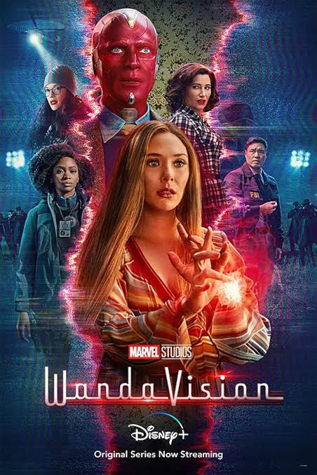
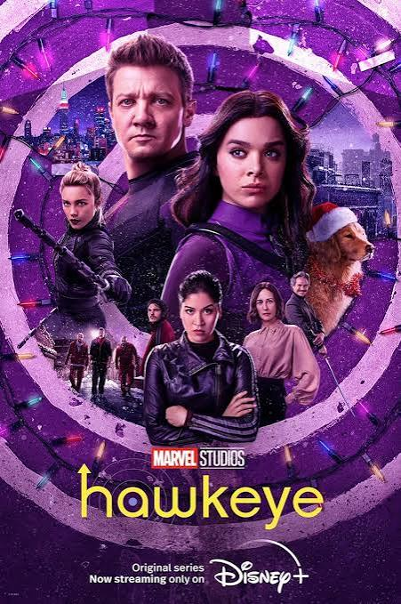
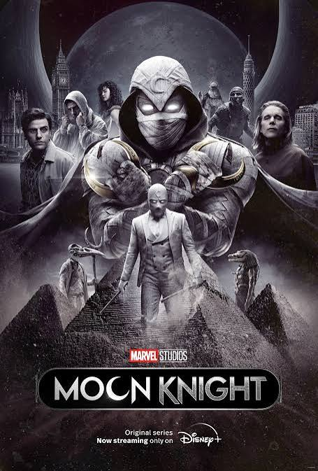
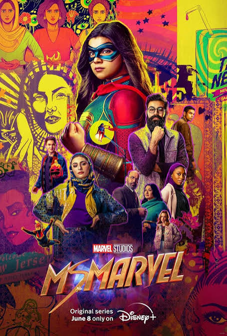
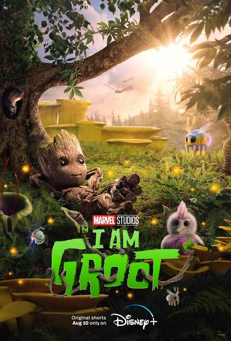
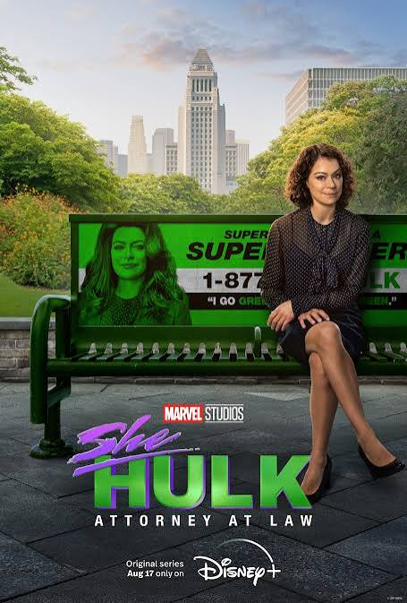
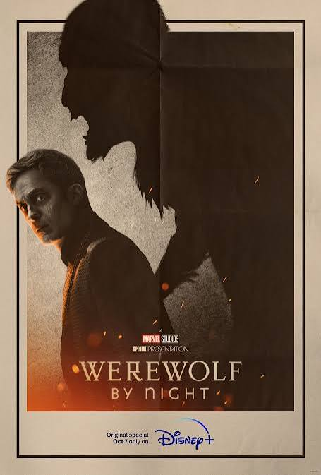

Phase 4
Четвёртая фаза открывает новую эпоху MCU после событий Infinity Saga. Вселенная расширяется, появляются новые герои, новые команды и первые серьёзные истории, связанные с мультивселенной.

WandaVision
Ванда Максимофф и Вижн оказываются в необычной реальности, которая скрывает множество тайн.

The Falcon and the Winter Soldier
Сэм Уилсон и Баки Барнс объединяются, чтобы справиться с новой угрозой.

Loki
Локи оказывается связан с организацией, которая следит за событиями во времени.

Black Widow
Наташа Романофф возвращается к событиям своего прошлого и встречается со своей семьёй.

What If...?
Анимационный сериал исследует альтернативные варианты событий MCU.

Shang-Chi and the Legend of the Ten Rings
Шан-Чи сталкивается с прошлым своей семьи и организацией Десяти колец.

Eternals
Древние существа возвращаются после долгого отсутствия, чтобы защитить Землю.

Hawkeye
Клинт Бартон объединяется с молодой лучницей Кейт Бишоп.

Spider-Man: No Way Home
Питер Паркер сталкивается с последствиями магического вмешательства Доктора Стрэнджа.

Moon Knight
Марк Спектор оказывается втянут в мистическую историю древних богов.

Doctor Strange in the Multiverse of Madness
Доктор Стрэндж сталкивается с опасностями мультивселенной и другими версиями реальности.

Ms. Marvel
Камала Хан получает необычные способности и начинает свой путь супергероя.

Thor: Love and Thunder
Тор встречает старых друзей и сталкивается с новым опасным противником.

I Am Groot
Короткие приключения маленького Грута во время его взросления.

She-Hulk: Attorney at Law
Дженнифер Уолтерс пытается совмещать работу адвоката и жизнь супергероя.

Werewolf by Night
Группа охотников на монстров оказывается втянута в опасную мистическую охоту.

Black Panther: Wakanda Forever
Ваканда пытается сохранить своё наследие после потери своего короля.